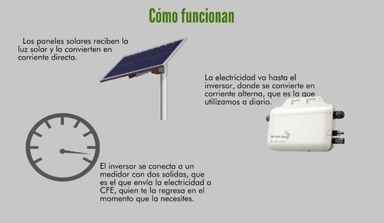

El ser humano ha desarrollado tecnología que puedes ver en todos lados en el día a día, desde computadoras hasta coches eléctricos inteligentes, a tal punto que muchos de los procesos se pueden automatizar, pero como hay cosas buenas también tiene cosas malas. La tecnología nos ha hecho no solo dependientes sino también flojos, y es comprensible porque se nos facilitan muchas cosas y las pone más a la mano, por ejemplo ya no es difícil el tener que investigar, antes tenías que buscar en libros, en bibliotecas, hasta apoyarse en gente con el conocimiento, pero ahora tenemos diferentes herramientas como google que automatizan los procesos y te arrojan la información bastante completa prácticamente en cualquier tema, así como también los tutoriales en youtube y otras muchas herramientascon sólo tener internet.
Sí, la tecnología nos ayuda es estar conectados y a ser una sociedad avanzada con ingreso a información inimaginable, sin embargo, hemos perdido antiguos hábitos que nos ayudaban a ser más inteligente o ágiles como la lectura, el dibujo o pasar un día fuera de convivencia, la concentración se pierde, hay falta de control del uso de la tecnología, sentimos la necesidad de estar conectados constantemente al celular, hay comunicación rápida. Un análisis llevado a cabo en España por el Instituto Nacional de Estadística (INE), reveló que el 96% de los domicilios cuenta con un teléfono móvil, el 74% tiene acceso al internet y un 93% lo usa diario, por consiguiente, es fundamental tener un óptimo uso de la tecnología, debido a que nuestra capacidad de contestación, diálogo, concentración y humor, las cuales nos realizan seres sociales por naturaleza, permanecen siendo eliminadas por el mal uso de la tecnología.
La tecnología nos esclaviza.
25/11/21
Top 10 mejores
inventos tecnológicos
Cámaras
Smart tv
Drones
Robots
Smarphones
Celdas solares
Tecnología para la casa
Coches inteligentes
Computadoras
Internet
Inventos espectaculares.
La computadora integrada Hardware 3 de los coches tesla procesa más de 40 veces los datos comparado con nuestro sistema de la generación anterior. Esta computadora realiza la red neuronal realizada por Tesla, que es la base de cómo se entrena y desarrolla el Autopiloto. Este sistema da una vista de todo el mundo a la que un conductor por sí solo no puede entrar, debido a que ve en todas direcciones por igual y en longitudes de onda que van más allá de los sentidos humanos. La estabilidad del Autopiloto y sus funcionalidades de conveniencia permanecen diseñadas para ayudarlo con los tramos más tediosos de manejar. El Autopiloto muestra novedosas funcionalidades y cada vez supera las características ya existentes para que, con la época, Tesla sea más seguro y tenga mejores habilidades. El Autopiloto posibilita que los autos maniobren, aceleren y frenen automáticamente en su carril.Las funcionalidades recientes de Autopiloto necesitan una supervisión activa del conductor y que no dejen que el transporte sea independiente.
Tecnología reciente.Créditos a: My Spanish Tutor / GCSE & A level.
Canción: Comptine d’un autre été.
Artista: Wouter Harbers.
Álbum: Romance.
Con licencia cedida a YouTube por [Merlin] FUGA Aggregation (en nombre de STH Records);
SODRAC, UNIAO BRASILEIRA DE EDITORAS DE MUSICA - UBEM, LatinAutor, União Brasileira de
Compositores, LatinAutorPerf, LatinAutor - UMPG
Cada día el ser humano, incluyéndome, se está haciendo dependiente a los dispositivos, debido a que por la pandemia nos hemos visto forzados a aprender y convivir desde zoom, whatsapp, instagram, facebook etcétera, pero desde antes ya se empezaba a notar una diferencia en las convivencias, por ejemplo, antes los amigos se reunian y convivian al 100% porque es lo que había y ahora las convivencias se ven afectadas e intervenidas por los dispositivos electrónicos a tal punto que se pierde la interacción con las personas fisicamente, lo cual es triste porque ya no hay convivencias sin telefonos o sin redes sociales que nos aparten de las conversaciones
En el video se exagera un poco pero la verdad es que ya nos estamos viendo automatizados como maquinas como demuestra el video a tal punto de llegar a hacer daño, en el video también demuestra como las cosas por las que nos deberíamos preocupar nos da igual, como cuando la niña se suicidó y todos la grabaron, como nos podemos desenfocar de lo que es importante para estar en las redes sociales desperdiciando tiempo en lo que no vale realmente la pena, también enseña como la sociedad se ha vuelto superficialista y como los aparatos nos encarcelan en el vicio a tal punto que podemos ignorar nuestro entorno sin reacción ni importancia alguna
Es la conectividad global y de comunicación instantánea con personas a miles de kilómetros de distancia, para comprender la situación, se explican tres factores fundamentales que afectan en su funcionamiento: la infraestructura responsable de la transferencia del emisor al receptor, hasta la interpretación de la información en aplicaciones que llevan a los usuarios a donde quieren ir y que usan Internet todos los días siga esta demostración para recordar que la realidad virtual proporcionada por Internet es real, por lo que hay que usarla con cuidado los métodos y la información proporcionada de esta manera.
Fecha: 2011. Autores: Abad Restrepo, Ana Cristina, Lalinde Pulido, Juan Guillermo, Muriel Gil, Luisa Fernanda, Arango Hurtado, Carolina Fuente de googler scholarInternet
Paneles solares
"En 2011 la producción de energía solar mundial fue de 85 teravatios por hora de electricidad, suficiente para satisfacer las necesidades de 100 millones de personas" según Gustavo Arencibia-Carballo. Europa es la región líder con una capacidad instalada es de 51 GW, seguido de Japón (5 GW), EE. UU. (4,4 GW) y China (3,1 GW),en europa España es el mayor productor. Cuando más lo necesitamos, cuando más lo necesitamos aumentar el consumo de combustible y la generación de energía, debemos considerar soluciones alternativas para optimizar el sistema de iluminación. Mediante el uso de tecnología de paneles solares, también puede obtener energía para otros fines. La energía solar fotovoltaica (ESFV) es una fuente de energía. La energía renovable se puede utilizar para generar electricidad. el uso de paneles solares fotovoltaicos (PSFV) para convertir la radiación solar en electricidad, es adecuado para muchas actividades diferentes de la vida.
Arencibia-Carballo, Gustavo La importancia del uso de paneles solares en la generación de energía eléctrica REDVET. Revista Electrónica de Veterinaria, vol. 17, núm. 9, septiembre, 2016, pp. 1-4 Veterinaria Organización, Málaga, España Fuente de googler scholar

Cómo funcionan
Inteligencia Artificial (AI)
La inteligencia artificial es la capacidad de las máquinas para utilizar algoritmos que aprenden de los datos y se utilizan en toma decisiones como un ser humano. Sin embargo, a diferencia de los humanos, los dispositivos basados en inteligencia artificial no necesitan descanso y pueden analizar grandes tamaños. Obtenga mucha información a la vez. También la tasa de error mucho más baja en la máquina ya que realizan las mismas tareas que sus homólogos humanos.
La idea de que una computadora o programa de computadora puede tanto aprender como tomar decisiones es la siguiente: Es especialmente importante para nosotros ser conscientes de esto, ya que sus procesos están en constante evolución y crece exponencialmente con el tiempo. Gracias a estas dos capacidades, los sistemas de inteligencia artificial pueden: completar muchas tareas que antes solo estaban disponibles para los humanos. Se han utilizado tecnologías basadas en inteligencia artificial para ayudar a las personas a aprovechar los beneficios de las innovaciones, ganancias sustanciales y disfrute virtualmente de un mayor rendimiento
LASSE ROUHIAINEN, INTELIGENCIA ARTIFICIAL 101 COSAS QUE DEBES SABER HOY SOBRE NUESTRO FUTURO Fuente de googler scholar
.png) Pros y contras de la tecnología
Pros y contras de la tecnología.png) Top 10 mejores
inventos tecnológicos
Top 10 mejores
inventos tecnológicos
.png) Enlaces para más información
Enlaces para más información
.png) ¿Qué es el internet?
¿Qué es el internet?.png) Paneles solares
Paneles solares.png) Inteligencia Artificial (AI)
Inteligencia Artificial (AI)